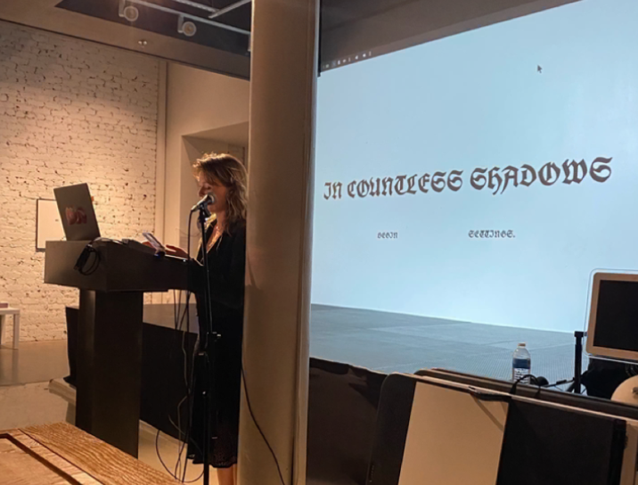
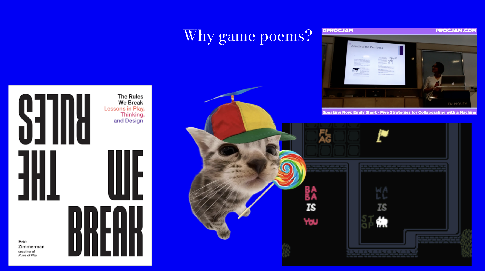

Game Poems
Computational Poetry Reading Group · tiat, San Francisco · October 2026

I guest-curated an evening of game poems for the Computational Poetry Reading Group, a recurring gathering at the intersection of language and technology. I wanted to bring people working in games and poetry into conversation around the formal possibilities of both mediums. What happens when the act of reading becomes an act of playing? What can a game's rules do that a line of verse cannot, and vice versa?

Why game poems?
Shakespeare is systemic. Poetry is systemic. It's powerful emotions in formal containment.
Part of what I love about both poetry and games is the process of coming to understand a form. I can return to a Shakespearean sonnet over and over and discover new relationships within the same fourteen lines.
I'm interested in what bringing a lusory attitude to poetry might enable. What can we learn about a form by playing within its constraints, manipulating its structures, or collaborating with a computational system to explore its possibilities?
In introducing the evening, I drew on Eric Zimmerman's The Rules We Break, Emily Short's Five Strategies for Collaborating with a Machine, and Hempuli's Baba Is You.
Each offers a different way of thinking about the creative possibilities of formal systems. I'm particularly interested in how play might become a method of reading and writing poetry, allowing us to discover things about language through experimentation that we might not otherwise encounter.
An evening of readings, performances and play
The program brought together Jake Rose, Alex Calderwood, Cat Manning, Nate K. Smith (vilmibm), and Tyler Freeman (odbol). I also presented a prototype of In Countless Shadows, my experiment in making Shakespeare's sonnets playable. Helen Shewolfe Tseng facilitated the conversation following the presentations.
Presented at tiat (the intersection of art & technology), co-presented with Culture Slop.